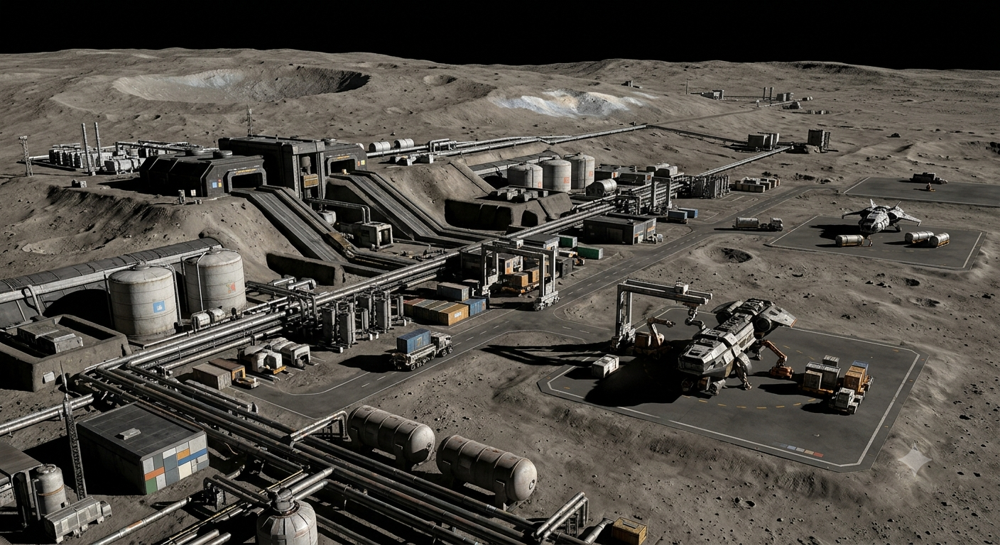
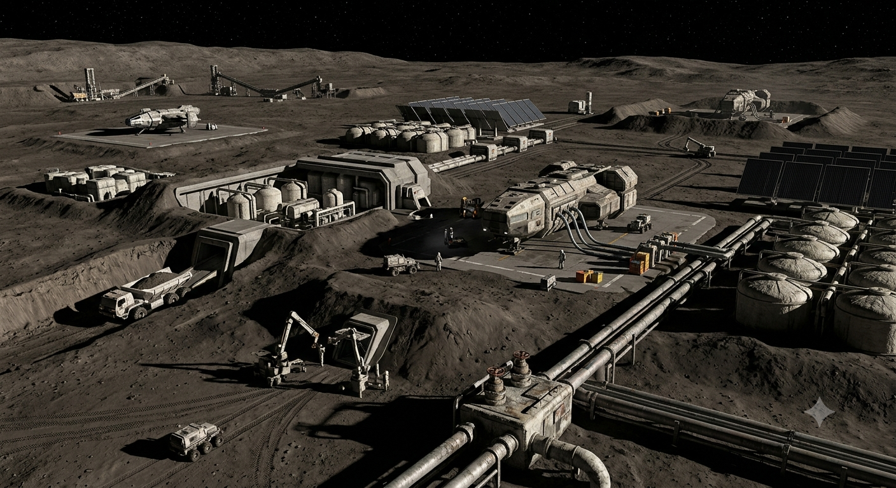
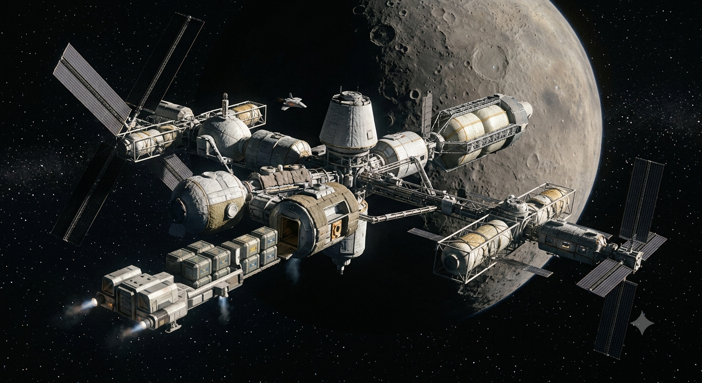
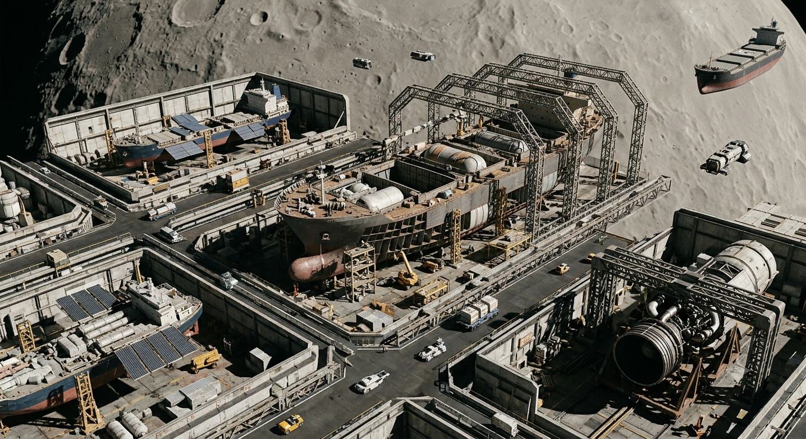
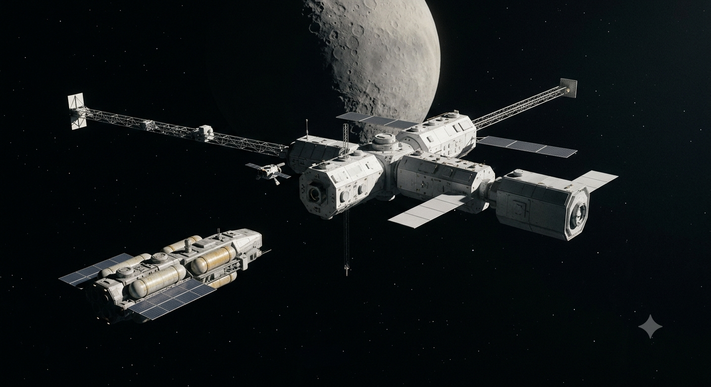

CER-P01 — Occator Industrial Lift & Surface Port
SURFACE_INBODY_PORT · HERO · APPROVED_REFERENCE
Five original approved-reference HERO images, byte-verified against the export manifest. Research gallery; no canon mutation.

SURFACE_INBODY_PORT · HERO · APPROVED_REFERENCE

SURFACE_RESOURCE_PORT · HERO · APPROVED_REFERENCE

ORBITAL_HABITAT_PORT · HERO · APPROVED_REFERENCE

ORBITAL_SHIPYARD · HERO · APPROVED_REFERENCE

STRATEGIC_PORT · HERO · APPROVED_REFERENCE